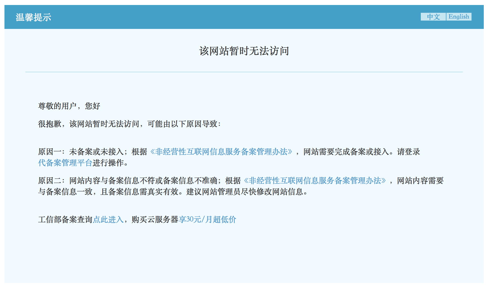

购买域名
从写博客开始，就想买一个自己的域名，最初的动力只是这样看起来更酷😎
之前没有这方面的经验（甚至连DNS的概念都不清楚），经过搜索，找到了阿里云，买了第一个域名，是 .cn 的域名，虽然一直没备案，但是一直用到现在，没毛病。
就在前两天，在阿里云上申请了云主机的免费套餐，试用6个月，想把域名指向我的主机。
然而…
指向我主机的二级域名在访问了一次之后，被封了！？

经过一番搜索，这个备案是我国要求的，说这样能让你的网站显得更正规，其他国家并没有这道程序 :)
第一次感受到了天朝的强大，随时可将我等屁民斩落马下。不用想，我在阿里云的华南区主机也是随时可以被封的。从此，我就想申请一个非 .cn 的域名，用国外的DNS，再租国外的服务器 :)
又经过一番搜索。了解了一下 godaddy, namecheap，感觉都是第一年便宜，后面续费贵，然后没有价格排序， namecheap 的域名也好像并不多。
今天无意发现一个广告，进来 uniregistry ，这里能搜到的域名很多，而且可以按照价格排序，还都是中文界面，我一度担心又是国内的域名商，还是可能被天朝斩落马下，看了下提供的工作机会，都在美帝，放心了。
所以，以我仅有的购买域名的经验，这家域名商是最满意的，且用用看。